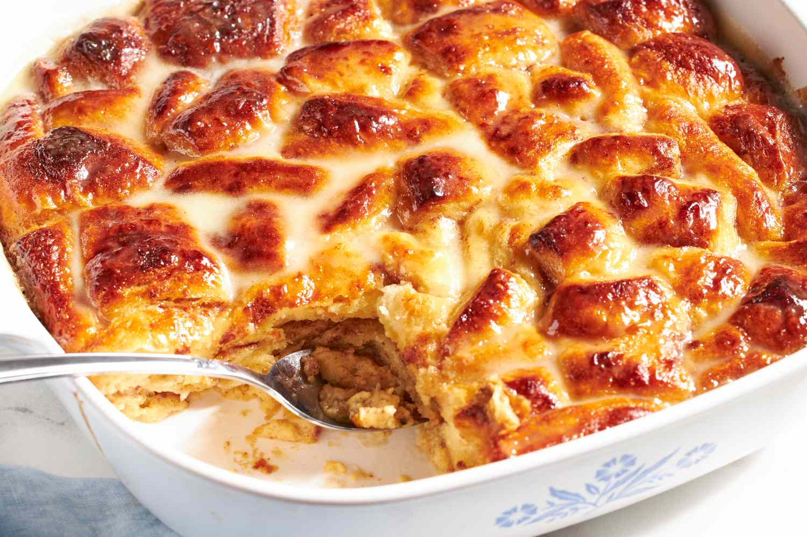

Home
Coquito Bread Pudding Recipe

Bread pudding with a cinnamopn roll and Puerto Rican coquito twist.
Sure to turn heads and have everyone asking for the recipe.
Ingredients
- Nonstick baking spray
- 1 (17.5-ounce) can Pillsbury Grands! Cinnamon Rolls with Cinnabon Cinnamon and Original Icing
- 1 3/4 cups coquito, divided
- 3 large eggs
- 1/2 teaspoon ground nutmeg, optional
- 1/2 cup tablespoons brandy, optional
Steps
- Preheat the oven to 375°F and spray a 9x9-inch baking dish with nonstick baking spray. Cut each cinnamon roll into four equal pieces, so you have 20 pieces total from 5 cinnamon rolls. Separate all the layers from each piece of cinnamon roll by pulling apart each sliver of dough. Add the dough pieces to a large mixing bowl and set aside.
- In a separate medium bowl, whisk together 1 1/2 cups of the eggnog, the eggs, and the nutmeg, if using, until fully combined, about 30 seconds. Pour the eggnog mixture over the cinnamon rolls in the large mixing bowl and use a spatula to stir until each sliver of dough is coated.
- Pour the mixture into the prepared baking dish. Use the spatula to distribute the dough evenly, making sure all areas of the baking dish are covered with dough. Spray one side of a large piece of foil with baking spray. The foil should be large enough to cover the baking dish. Tightly wrap the foil around the baking dish.
- Bake, covered, for 25 minutes. Then, remove the dish from the oven and remove and discard the aluminum foil. Place the bread pudding back in the oven and continue to bake, uncovered, until the top is deep golden brown and the center jiggles only slightly, about 10 minutes.
- While the bread pudding is baking, make the sauce. Use a spatula to remove the icing that came with the cinnamon rolls from its plastic container and put it into a small microwave-safe bowl. Microwave on high until fluid, about 15 seconds. Stir in the remaining 1/4 cup of eggnog and microwave for 5 more seconds. Stir in the brandy, if using.
- Remove the bread pudding from the oven and pour the icing eggnog sauce over the bread pudding. Then allow to cool on the counter for about 15 minutes, where it will soak in all that lovely sauce. Serve the bread pudding warm and enjoy!